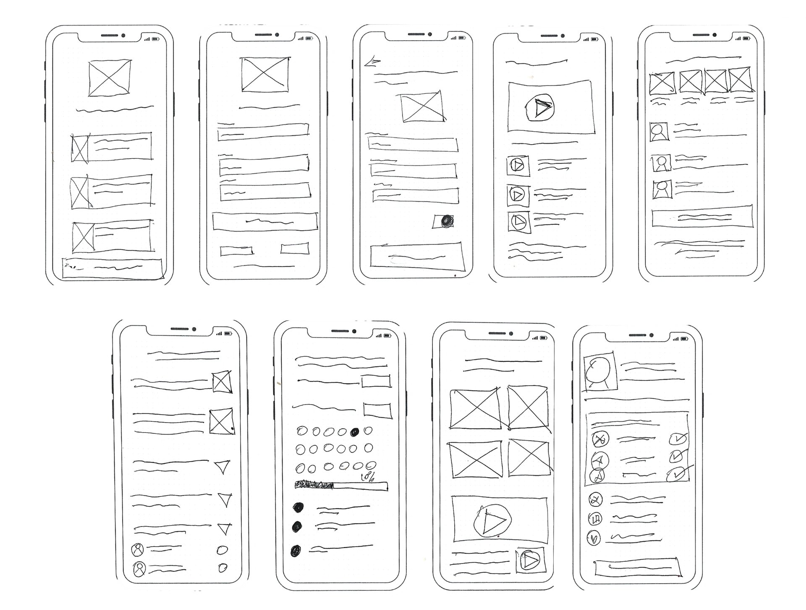
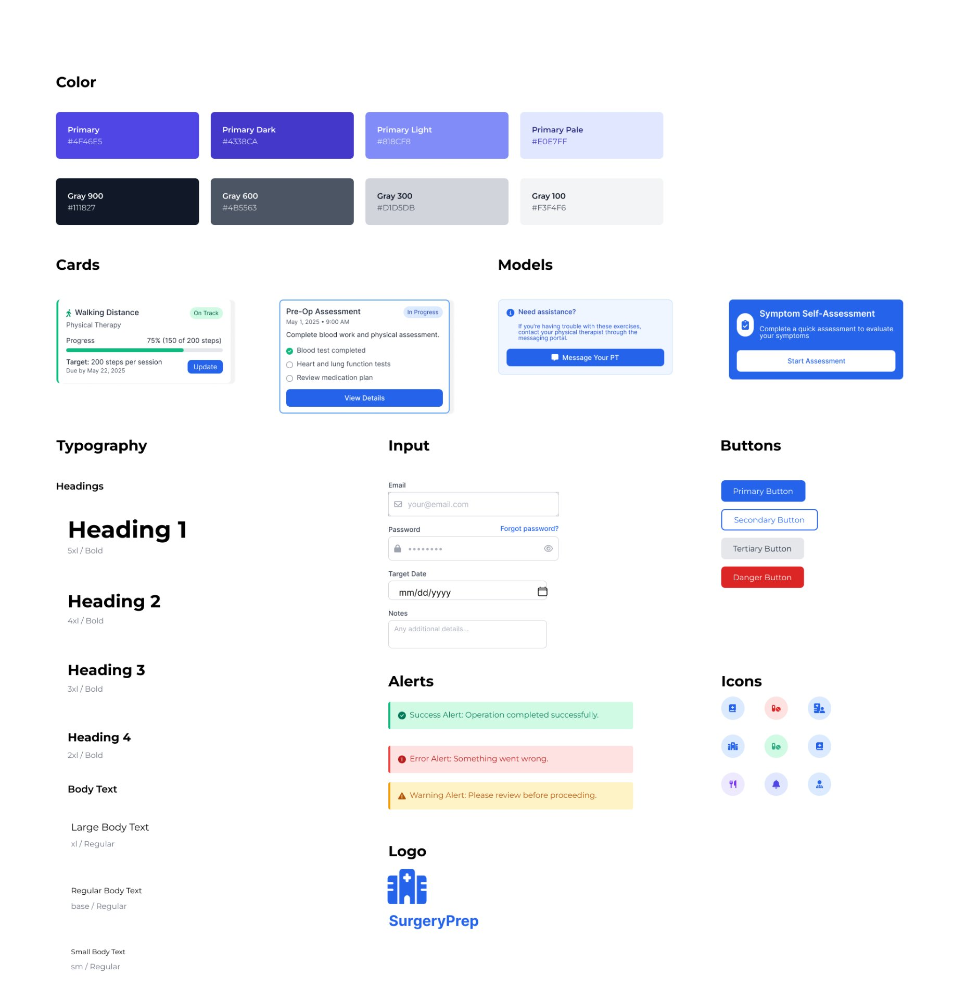
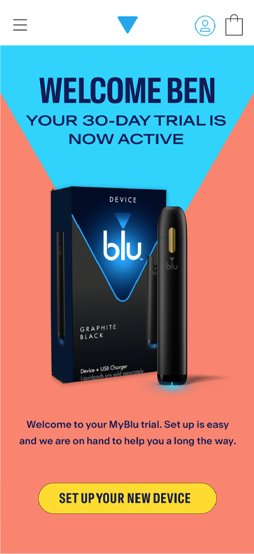

SurgeryPrep
100% task completion in testing. A mobile companion that measurably reduced pre-surgery anxiety calls to nursing staff — because patients finally had the right information, at the right moment.
Personalised surgical guidance to reduce patient anxiety and clinical overload — a mobile companion that guides patients through their surgical journey with clear, timely, and emotionally supportive information.

Design Process
How I approached this project
When patients are most anxious, they are most poorly served
Patients undergoing surgery often face a stressful, information-heavy experience. Traditional communication methods — leaflets, verbal consultations — frequently fail to support patients when they actually need guidance.
I felt completely lost after my surgery consultation. The leaflet they gave me was confusing, and I couldn't remember half of what the doctor said. I ended up calling the hospital three times just to ask basic questions.
— Sarah, knee surgery patient- Patients forget 40–80% of medical information immediately after consultations
- Printed instructions are easily misplaced or misunderstood
- Anxiety peaks before surgery due to unclear preparation steps
- Healthcare staff spend significant time answering repetitive patient questions
This breakdown in communication leads to increased patient stress, reduced adherence to instructions, and avoidable strain on already limited clinical resources.
A personalised, timeline-based mobile companion
SurgeryPrep was designed to adapt to each patient's surgery type and recovery stage — delivering information progressively, supporting emotional reassurance, and providing actionable guidance exactly when patients need it. The four design goals: reduce cognitive overload, increase patient confidence, improve adherence to instructions, reduce repetitive patient–clinician communication.
Understanding the human experience
I conducted patient interviews with 8 participants across orthopedic, cardiac, and general surgeries, and interviewed 5 clinicians (3 surgeons, 2 nurses). Qualitative research was intentionally prioritised to uncover emotional stressors — fear, uncertainty, information overload — that are invisible in clinical documentation. I coordinated stakeholder alignment between clinical staff and hospital administration throughout.
We answer the same five questions about post-surgery care at least 20 times a day. If patients had access to this information when they needed it, we could focus on more complex cases.
— Dr. Martinez, Orthopedic Surgeon

Defining the design challenge
Problem Statement: How might we transform complex medical instructions into clear, timely, and emotionally supportive guidance that helps patients feel confident throughout their surgical journey — while reducing unnecessary communication burden on healthcare staff?
Two primary personas were created — the patient (cognitively anxious, motivated to "do everything right", easily overloaded by dense medical language) and the healthcare provider (time-constrained, frustrated by repeated questions, concerned with safety and compliance). Because patients were often cognitively overloaded, advanced customisation was deprioritised in favour of guided defaults, progressive disclosure, and reassurance-driven design.


From problems to solutions
Over 20 concepts were explored through Crazy 8s and brainstorming sessions, evaluated against a value vs. effort matrix. Features such as live chat and real-time clinician messaging were intentionally excluded due to clinical risk, scalability concerns, and regulatory complexity. Focus remained on clarity, safety, and feasibility.
The key decision: Removing live clinician chat was a deliberate design choice, not a technical limitation. Every time we tested concepts with a live messaging feature, participants — especially patients — began treating it as a hotline. That would have created clinical risk, overwhelmed nursing staff, and ultimately broken the product. The best decision I made on this project was knowing what not to build. Patients needed clarity and reassurance, not a direct line to a busy surgeon.

A clear and intuitive information architecture was created to ensure users always knew where they were, what to do next, and what mattered most right now.

Building a scalable, accessible foundation
Before moving into high-fidelity screens, I established a dedicated design system for SurgeryPrep. A consistent system was essential in a healthcare context — patients and clinicians needed to trust and recognise interface patterns across every screen. The design system defined the colour palette (primary blue for trust and clarity, with structured grey scales for hierarchy), typography scale, card components, input styles, alert states, and icon set. Every component was built with WCAG 2.2 AA compliance baked in — ensuring colour contrast ratios, accessible focus states, and semantic structure throughout.

Low-fidelity to high-fidelity
Low-fidelity wireframes established core flows, then iterative testing refined hierarchy and clarity. The design system prioritised a calm, reassuring aesthetic while maintaining medical credibility — every colour, typography choice, and interaction was designed to reduce anxiety based on psychological design principles.

Final high-fidelity screens across the complete surgical journey — scroll inside each screen to explore:

Onboarding

Sign in

Create account

Surgical journey

Educational resources

Recovery tasks

Care team messages

Recovery goals
Validated impact, measurable outcomes
5 usability testing sessions (3 patients, 2 clinicians). Task-based scenarios across key flows.
Users described the experience as "reassuring" and "much clearer than leaflets." Clinicians identified strong potential for reduced call volume. Navigation required little to no explanation.
"Andrew's empathetic approach to design was exactly what this project needed. He navigated the complex stakeholder landscape — from surgeons to administrators — with remarkable skill, ensuring clinical accuracy while keeping the patient experience at the forefront. The app has dramatically reduced pre-surgery anxiety calls to our nursing staff, and patient feedback has been overwhelmingly positive."
Takeaways
What I learned
For the first time, I felt like I knew what was happening to my body.
— Patient participant, usability testing